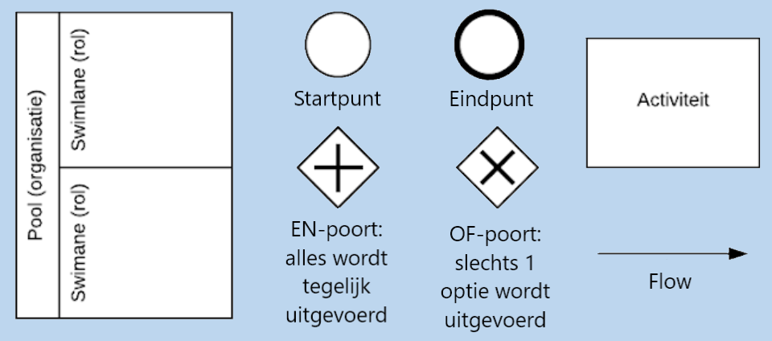
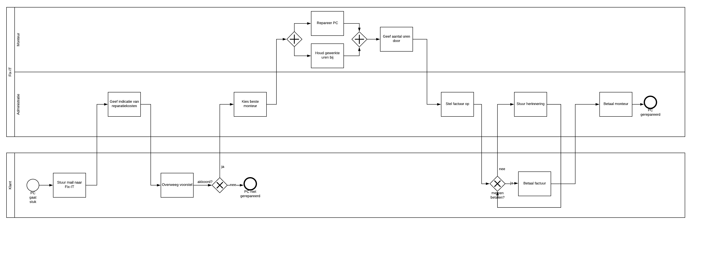

Modelleren
Om een informatiesysteem te kunnen ontwerpen, is het belangrijk om te onderzoeken wat het systeem moet ondersteunen. Er bestaan verschillende modelleertalen om deze processen en structuren weer te geven. Voorbeelden hiervan zijn BPMN, UML en Petrinetten. Deze geven de verschillende perspectieven waar in de ontwerpfase rekening mee moet worden gehouden.
Modelleren met BPMN
BPMN staat voor Business Process Model and Notation (zie http://www.bpmn.org/) en is een veelgebruikte standaard voor (bedrijfs)procesmodellering. De basiselementen zijn het startpunt, het eindpunt, de EN-poort, OF-poort, pool met swimlanes en flows. De verschillende poorten zorgen ervoor dat processen tegelijk kunnen verlopen of dat er een keuze gemaakt moet worden. Een pool is een verzameling van swimlanes, die elk een eigen rol of actor voorstellen. De pijlen geven de volgorde aan van de activiteiten.
Voorbeeld: Fix-IT
Het bedrijf Fix-IT is gespecialiseerd in het repareren van elektronische apparaten. Het bestaat uit een administratieafdeling en een groep monteurs, van wie het loon afhangt van het aantal uur dat ze ingezet worden. Het proces begint, wanneer een klant een mail stuurt over zijn of haar PC die kapot is gegaan. Op basis van die mail doet de administratie en indicatie over de kosten voor de reparatie, waarna de klant de reparatie voor deze kosten overweegt. Als deze de kosten te hoog vindt, kan Fix-IT verder niets meer voor de klant betekenen. Wanneer de klant het echter eens is met de prijs, kan er een monteur aan de slag. Dit kan pas nadat de beste monteur voor de klus gekozen is. Terwijl de monteur de PC repareert, houdt hij zijn uren bij op een urenadministratieformulier. Deze uren geeft hij aan de administratie door. Nadat de administratie op basis van deze kosten de uiteindelijke factuur op heeft gesteld, kan de klant de reparatie betalen aan Fix-IT. Wanneer de klant niet direct betaalt, stuurt de administratie een herinneringsmail. Dit gaat door totdat de klant daadwerkelijk betaalt. Tenslotte betaalt de administratie de monteur en is het proces afgerond.
Opgave: Learn-IT
Learn-IT is een bedrijf dat bijlessen aanbiedt voor betavakken. Het bedrijf bestaat uit een management, een administratieafdeling en een groep coaches die bevoegd zijn om bijles te geven. De belangrijkste procedure begint wanneer een leerling op de Learn-IT website een inschrijfformulier invult en opstuurt. De administratie houdt elke dag bij welke nieuwe inschrijvingen er binnenkomen en controleert hierbij of alle gegevens duidelijk zijn ingevuld. Als dit niet het geval is, laat de administratie aan de leerling weten wat er nog mist en krijgt de leerling opnieuw de kans om het formulier in te vullen. Wanneer alle gegevens volledig zijn, kiest het management de meest geschikte coach voor die leerling uit. Een administratief medewerker zet de eerste afspraak vast. Deze is gebaseerd op de beschikbare tijden die de leerling op het inschrijfformulier heeft ingevuld en de de tijden die de gekozen coach heeft doorgegeven. Vervolgens kunnen de bijlessen beginnen. Telkens nadat de bijles heeft plaatsgevonden, betaalt de leerling het bedrag voor de bijles aan Learn-IT, waarna de administratie de gewerkte uren meteen aan de coach uitbetaalt. Wanneer de leerling daarna opnieuw bijles wil, maakt de coach een vervolgafspraak en begint het riedeltje opnieuw. Wanneer de leerling echter wil stoppen met de bijlessen, vult hij of zij een uitschrijfformulier in, waarna de administratie de leerling uit het systeem haalt. Let op: voor modelleeropgaven zijn er altijd meerdere antwoorden mogelijk. Je model hoeft dus niet per se fout te zijn, als die niet hetzelfde is als het antwoord hierboven.
Klik hier voor het antwoordWil je verder oefenen met HTML of andere programmeertalen? Neem een kijkje op onze links pagina voor handige websites!